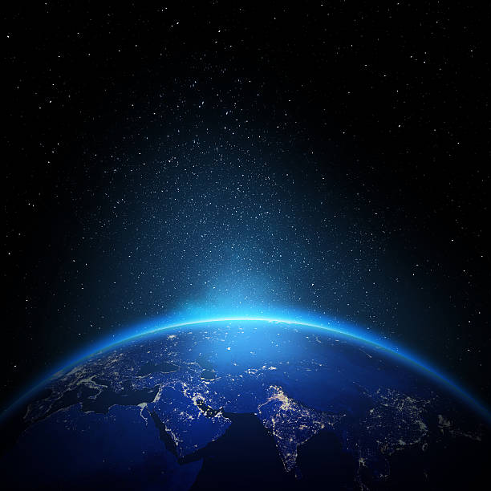

About Me
Hi! I'm Yüsra, a Geomatics Engineering student passionate about photogrammetry, remote sensing, and 3D city modeling. I enjoy exploring how geospatial technologies can transform real-world data into meaningful insights and realistic 3D visualizations.
I’m especially interested in projects that combine UAV data, image processing, and mapping to support smart city and environmental applications. Always curious and eager to learn, I aim to keep growing in the intersection of technology, data, and spatial design.